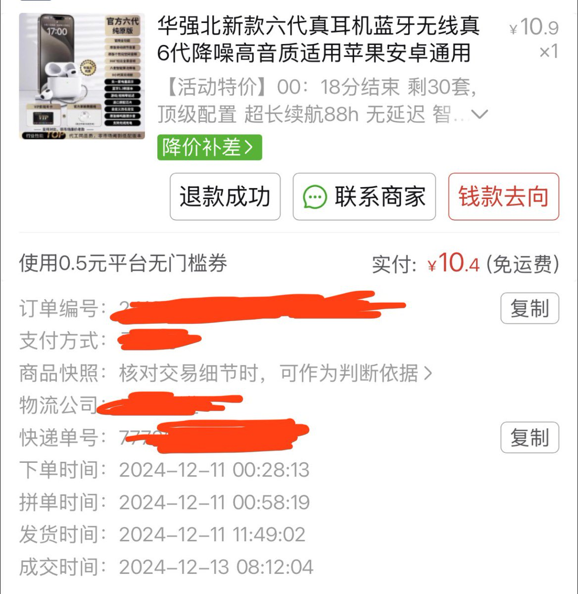
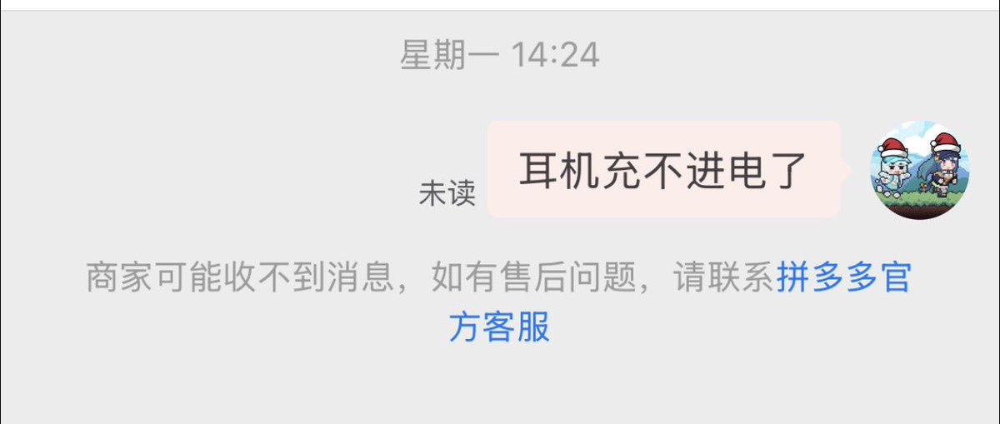
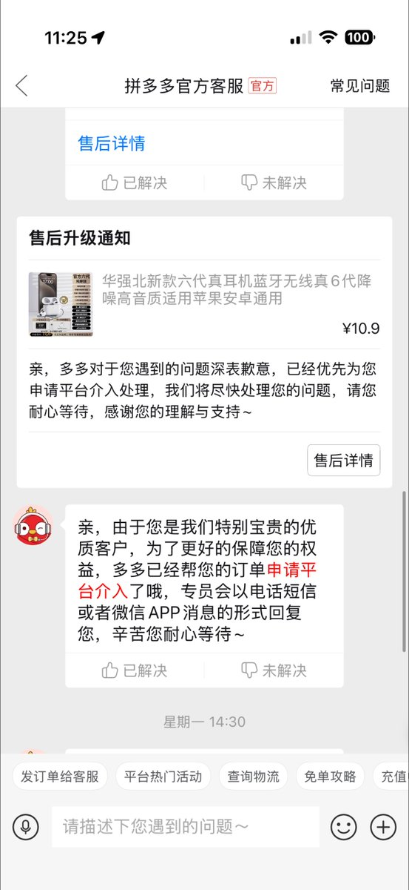

到底誰在洗商家。星期一的信息到現在都沒讀不應該強制退款？
難道就因為是一年前買的東西就拒絕提供服務嗎？就算無法提供「怎麼辦」，連「為什麼］都不回答一下，就完全是商家的問題了。
另外，華強北到現在也沒有第六代的AirPods。
我幾個月前去華強北最新的還是第四代。

難道就因為是一年前買的東西就拒絕提供服務嗎？就算無法提供「怎麼辦」，連「為什麼］都不回答一下，就完全是商家的問題了。
另外，華強北到現在也沒有第六代的AirPods。
我幾個月前去華強北最新的還是第四代。



讲个好笑的，我一年前pdd买的山寨耳机，当时收到货就听了一下然后扔在那没管了，一年之间一次都没用过，这周打开试了一下没电了也充不进电，遂联系商家，发现商家已经跑路了，根据提示联系pdd官方客服，居然还能申请退货退款，一顿操作后真把钱退回来了，pdd猛 https://t.co/Herv4kQ8oU